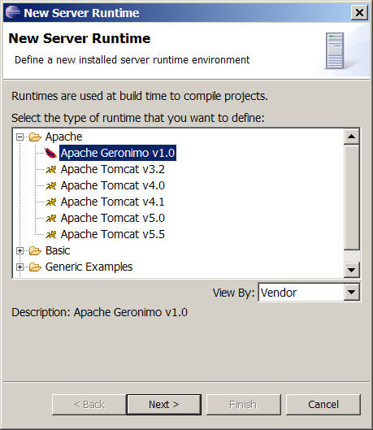
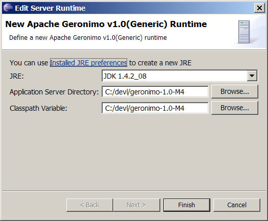

Installing Apache Geronimo
In this tutorial, you will install an Apache Geronimo server
using the Server Installed Runtimes preference page.
Installing Server Runtime
-
If you do not have Apache Geronimo on your machine, you
will first need to download and uncompress the
Apache Geronimo zip or tar file. Currently
only version 1.0 of Apache Geronimo is supported.
-
Open
Window -> Preferences -> Server
-> Installed
Runtimes
to create a Geronimo installed runtime.
-
Click on
Add...
to open the
New Server Runtime
dialog, then select Apache Geronimo
v1.0 under Apache:

-
Click
Next
, and fill in your
Application
Server Directory and Classpath Variable
to point to the directory where you installed Geronimo.

-
Ensure the selected
JRE
is a full JDK and is of a version that will satisfy
Apache Geronimo. If you do not have a JDK installed you can install
one by clicking on the
Installed
JRE Preferences.
-
Click
Finish.